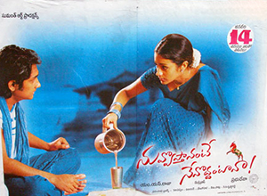

I love to spent lot of time at my home.My favourite place was prodduture because lot of my relatives present their. I can speak three different languages: English, Telugu, Hindi. I was 22 when I got my first job at infor company, which helped me develop lot of my skills.One of my main professional goals is to one day become a software developer.
Santosh is millionaire parents Janaki and Prakash and brought up in London fall in love with Siri is a traditional, simple, rural girl from Andhra Pradesh who is brought up by her only older brother Sivaramakrishna.When Santosh learns of this, he goes to Siri's house and pleads to her brother to accept him. Sivaramakrishna gives him a chance, just like he was given a chance by Narasimha when he was a child. Santosh is tasked to take care of the cows, clean up after them, and grow more crops than Sivaramakrishna by the end of the season; if he does not, Santosh shall leave the village forever and never see Siri again. Narasimha and his son are not happy as Narasimha's son wanted to marry Siri. With them, Dolly, and her father trying to get Santosh to lose the competition, Santosh has to work hard for his love, eating red chillies and rice every day, even though he can't bear it. In spite of many antics from Narasimha's and Dolly's side, Santosh eventually proves his love for Siri to Sivaramakrishna and succeeds in growing more grain. However, Narasimha and his son kidnap Siri and then try to force her to marry his son. A fight takes place in which Santosh kills Narasimha's son while Sivaramakrishna violently defeats Santosh's uncle's business partner and Narasimha. After realizing that Santosh and Siri should be together, Sivaramakrishna takes the blame for this murder and spends five years in prison.
